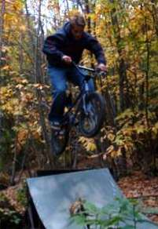
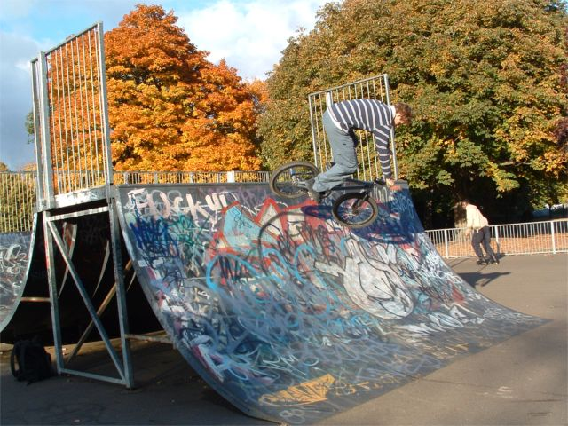

wednesday, october 29|
well tim's trails trip was a wash out but nevermind. i have a suspicion that our trails are still dry as a bone. look at this site: april1st. i love trails even more now. new computer soon i hope. don't forget to digtrails. thats what i want do all weekend. all these funny pictures are how i spend my time at work. |
tuesday, october 28|
another day another dollar. its so cold at the moment. digtrails died last night. if it does it again then look at http://digtrails.crimsonblog.com or whatever it is at http://unknowntrails.co.uk. i drove 1282 miles last week. or was it the week before? i don't know. tomorrow tim is coming to epsom and is going on a mini trails tour, which reminds me, i need to mark the trails on the map. wisley, nonsuch, leatherhead, burgh heath. all too big for my liking. my mum and sister are away in canada for the week. you should see the mess in the house. friday: the big clearup. apparently there a skateham thing going on this sunday evening. sounds good. skateham opening times are stupid. who do i email about it? |
monday, october 27
 on saturday we went to tenterden. it was quite sad becasue all the big jumps have been destroyed so we could't ride it. we rode the smaller stuff, but i guess you can read all about that later when i update properly.on the left: there were some tiny and annoying manual bumps on the run up to the small jump, and some abandoned metal ramps in a ditch, so we made a spine over the bumps to get over them and get more speed for the jumps. todays word: makeshift i need to make some plans for next weekend because i am so bored this morning and i need something to focus on before i get up and walk out. if you got this far well done. i might update more later and it might be in here. |
|
|

yesterday we dropped in to wandle park in croydon. were expecting it to be rubbish, just a box and a spine, but it was really good. the box is big and the spine is a good size for me (small). it was full of pikeys though so i was too scared to get my camera out and i only got this picture and one other. tim god cut up realyl badly too and injured his arm. the rest of the weekend we just played about at the trails changing bits and pieces and trying a few new tricks. |
|
sunday, october 26| busy weekend of fun. the clocks went back so now it's proper winter. dark before tea. the trails are still dry though so i have been riding till it hurts. there are a few different updates to come, but first is this, which has been updated with some pictures of the trails how they are at the moment. they have changed since the spring quite a lot. i thought it was time to update this as it is the part of the site that gets a lot of attention in the winter. there is a link in this text somewhere. and the update's boring as its all pictures so it'll take ages to load. that's winter for you. |
friday, october 24
 Agaetis Byrjun Agaetis Byrjun
-Sigur Ros i have been getting up at 5:30 and leaving by 6 in the morning to get to work early and miss the traffic. the journey is just over an hours, which coincidently is the length of this cd. it is perfectly suited to listen to at that time in the morning, as it is quiet and the sun rises. not only that but it's really good. i must have listened to it every day for at least a week if not more. i remember when i say them play in oxford. people laughed at him because they thought he was singing out of tune, but i think it sounds amazing. if you like this you'll love radiohead. (not necessarily the other way round i'm afraid.) oh, and i forgot to mention. they are from iceland so i can't understand a word they sing. |
|
 i rode merland rise recreation ground this lunch time. thats the park pictured left. it was pretty rubbish as the concrete has started to crack up so halpf of the box is not rideable. i found a pro line over it and practiced some trickys. also i did some peg stuff. i can't use pegs, but i tried for a bit on a ledge and scratched my cranks. they are new as well. i need somewhere good to ride at lunch. i rode merland rise recreation ground this lunch time. thats the park pictured left. it was pretty rubbish as the concrete has started to crack up so halpf of the box is not rideable. i found a pro line over it and practiced some trickys. also i did some peg stuff. i can't use pegs, but i tried for a bit on a ledge and scratched my cranks. they are new as well. i need somewhere good to ride at lunch. i also met a defensive tree surgeon |
|
| i did this new look while watching the whole of the first series of the office. can you tell? that's right it took 3 hours. i really need some riding pictures, but due to the lack of riding i have been doing that's not very likely. i was going to go after work, but it's dark now, and skaerham won't let me in until 9. that's pointless, turning away customers. i might go out at lunch, but there's nowhere close to here that's good. it looks like its going to be a cold winter of street
 this picture is very old - from the moutainbiking days of yore. it's still probably the closest tim has ever come to a turndown. totally by accident, which is funny. this picture is very old - from the moutainbiking days of yore. it's still probably the closest tim has ever come to a turndown. totally by accident, which is funny. below is a picture of the swans by the trails. they are nearly grown up now, although they are still grey. do swans migrate or hibernate or neither? this reminds me of the long summer days at the trails. its so easy to forget that now its cold. if i still have this job by june then i'm gonna quit it and ride for 3 months solid. look how green it is. that is amazing. oh and finally for now, when its raining, read a book. what one you ask? ender's game by orson scott card. another update later i hope - this is fun
 |
thursday, october 23| well well well. seb gave me a challenge on the old book thingy, and i think the response is appropriate. should be updates every day thanks to this funky gismo. but i guess we'll see. my computer at work has a usb port so there should be pictures if i can get that to work. for now though some links:
who is this guy
the old trailscene
ben is good |
|